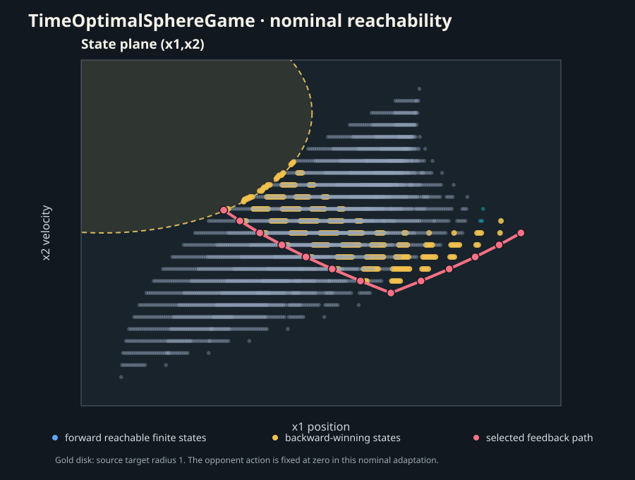

TimeOptimalSphereGame: nominal reachability
The pinned source is a two-state point with dynamics x1′=x2+v, x2′=u and a unit-disk target. This pilot freezes the adversarial input at v=0, uses controls u∈{-1,0,1}, and computes finite-state backward-winning sets with CSL's finite-feedback reachability solver.
The initial state first becomes winning within 12 outer steps (1.2 s). Replaying the selected policy enters the disk after 119 source Euler substeps (1.19 s). The figure overlays forward reachable states, backward-winning intersections, the target disk and one selected feedback trajectory.

Finite action states in the source position–velocity plane.Adaptation: the source lets a second player choose v∈[-1,1] and asks for minimum time to capture under continuous actions. This pilot fixes v=0 and checks only the three finite control values through 1.2 seconds. It does not reproduce the original two-player RL optimum. The open-loop and feedback notions coincide here only because the opponent action is frozen and the selected trajectory is deterministic.
The horizon sweep records one solver call per candidate horizon, zero warmups and no performance comparison. The saved record includes all reachable transitions, backward-winning sets, feasible actions, source/compiler identity and checksums.
Measured CSL source commit: 2b58617c40cc1451d35350d332be226ab4f01674.